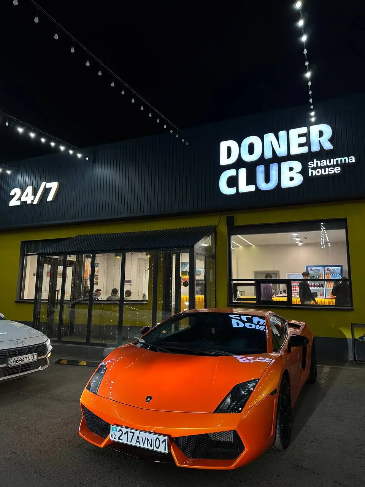

Это «мозг ресторана», который мы сейчас арендуем
Он знает меню, заказ, кассу, кухню, склад и отчёты. Если отключить его сегодня — часть процессов остановится.
DONER CLUB · DIGITAL STRATEGY / 2026
От набора внешних сервисов — к собственной операционной системе сети: заказы, касса, кухня, сайт, приложение, Call Centre, агрегаторы, оплата, фискализация, CRM и аналитика в одном контуре.

Сегодня заказ проходит через несколько чужих «переводчиков» и систем. Мы предлагаем постепенно сделать собственный центр, куда приходит любой заказ и откуда он уходит прямо на кассу и кухню.
Он знает меню, заказ, кассу, кухню, склад и отчёты. Если отключить его сегодня — часть процессов остановится.
Wolt, Яндекс и другие площадки говорят каждая на своём языке. Kwaaka переводит их заказы в формат ресторанной системы.
Все каналы говорят уже с Doner Club напрямую. Дальше наша система сама решает, куда отправить заказ, как показать его кухне и как сообщить гостю.
Наведите на подчёркнутые термины — появится простое объяснение. Например: , , .
Мы начинаем не с нуля. За последние этапы вокруг iiko уже вырос собственный цифровой контур Doner Club.
Собственный интерфейс, меню, модификаторы, стоп-лист, выбор точки, CRM, локальный Kaspi Smart POS bridge.
Клиенты, история заказов, точки, API, авторизация, база для сайта, киоска и будущего приложения.
Собственная аналитика продаж, каналов, персонала, ревизий и Telegram-отчётов.
Собственное меню, профиль, корзина, точки, модификаторы и стоп-лист. Онлайн-оплата и реальный checkout — следующий слой.
Мы уже принимаем изменения кухонных статусов Арай и Республики в собственный backend.
Следующий шаг — связать заказ, телефон и Telegram, чтобы гость подходил к кассе только после «Готов».
Один формат заказа внутри Doner Club, независимо от того, где заказ появился.
Kiosk, сайт, приложение, Call Centre — интерфейсы для гостя и сотрудника.
Каталог, цены, модификаторы, стоп-лист, заказы, клиенты, платежи, статусы.
Локальный сервис на точке, который держит POS и KDS живыми даже при проблемах с интернетом.
Адаптеры к Wolt, Яндекс, Glovo, Webkassa, банкам и другим внешним системам.
Оператор собирает заказ один раз. Doner OS сама отправляет его на нужную точку и кухонный экран.
CRM узнаёт номер, показывает имя, адреса и историю.
Видит только актуальное меню и стоп-лист конкретной точки.
Заказ создаётся в едином Order Hub с источником CALL CENTRE.
Кассир ничего не перепечатывает. Кухня видит его рядом с киоском и агрегаторами.
«Готовится» → «Готов» → «Выдан» возвращается в Doner OS.
Telegram, сайт или приложение сообщают: «Ваш заказ готов — можно подойти к кассе».
Да — поэтапно. Технически это набор адаптеров. Организационно нужны официальные доступы и сертификация у каждого агрегатора.
Wolt официально поддерживает POS и Middleware Provider интеграции: заказы, меню, availability, статусы и onboarding через тестовую среду.
У Яндекс Еды есть официальный API для ресторанных систем: меню, стопы, создание и изменение заказа, статусы и курьер.
Архитектурно адаптер такой же. Перед разработкой нужно подтвердить доступ Doner Club к production API / POS-интеграции для Казахстана.
Для Doner Club задача проще, чем для универсальной ресторанной системы: у нас самообслуживание и единая выдача заказа целиком.
У нас нет отдельной стадии «сборщик заказа». Донер, Pepsi и соусы находятся в одном чеке и выдаются гостю одновременно. Поэтому статус «Готов» определяется по заказу целиком — после этого гость сам подходит к кассе.
Если полностью уйти от iiko, точка не должна зависеть от одного интернет-соединения или одного облачного сервиса.
iiko не обязана оставаться посредником между оплатой и фискальным чеком.
Формирует заказ и итоговую сумму.
Kaspi Smart POS, Forte или онлайн-карта подтверждают оплату.
Получает состав заказа и создаёт фискальный чек.
Ссылка / QR сохраняются в заказе и доступны гостю.
Webkassa публично заявляет поддержку интеграции с кастомными ERP/POS и собственным API. Перед боевым запуском финансовые и фискальные сценарии проходят отдельное тестирование и согласование. Источник ↗
Не касса и не красивый интерфейс. Настоящая сложность iiko скрыта в учёте, корректировках и надёжности.
Никакого «выключить iiko в пятницу и проверить в субботу». Каждый слой сначала работает параллельно и только после стабильного пилота становится основным.
Единая модель заказа, статусы, связь с CRM, webhook, журнал событий, idempotency.
Сначала на одной точке. iiko остаётся рядом как страховка и источник сверки.
Оператор отправляет заказ прямо в Doner OS; фискализация выводится из iiko.
Точка продолжает принимать и готовить заказы при потере интернета.
Сертификация, sandbox, pilot. Kwaaka остаётся на каналах, которые ещё не перенесены.
Арай, Республика и следующие точки работают в одном контуре.
Склад, закупки, техкарты, себестоимость, ревизии. После этого iiko можно убрать полностью.
Сроки — ориентир для планирования, а не обещанный календарь. Они зависят от команды, доступа агрегаторов, платёжных и фискальных согласований и глубины ERP.
Собственная система даёт контроль, но вместе с контролем Doner Club забирает на себя ответственность за бесперебойную работу.
Главный принцип — переносить ответственность только после того, как новый модуль доказал стабильность в реальной точке.
Новый модуль считает и принимает события параллельно, но не управляет бизнесом.
Одна точка и ограниченный поток. Сверяем каждую продажу и каждый чек.
Повторный запрос не создаёт второй заказ или вторую оплату.
Каждое изменение заказа имеет время, источник и пользователя.
Если новый канал недоступен, есть понятный резервный сценарий.
База, конфигурации и критические данные восстанавливаются из резервной копии.
РЕКОМЕНДАЦИЯ ДЛЯ РУКОВОДСТВА
Первый стратегический продукт — Doner OS 1.0: Order Hub + POS + KDS + Call Centre + Webkassa + Offline Edge. Это выводит из-под iiko основную операционную работу, но не заставляет одновременно переписывать склад и бухгалтерскую логику.
склад и сверка на переходном этапе
по мере прямых коннекторов Wolt / Яндекс / Glovo
единая система управления заказом и точкой
Короткие ответы для обсуждения стратегии с операционной, финансовой и IT-командой.
Да, но только после внедрения Doner Edge. Он хранит локально меню и активные заказы, а затем синхронизирует события с облаком.
Нет. Сначала iiko остаётся параллельным контуром и источником сверки. Отключение каждого модуля происходит только после пилота.
Да. Мы можем забирать каналы постепенно: например, Wolt и Яндекс напрямую, а Glovo временно продолжает идти через Kwaaka.
Никто. KDS меняет статус заказа, Doner OS отправляет Telegram/push, и гость сам подходит к кассе.
Как и сейчас: самообслуживание. Кассир выдаёт весь чек целиком; отдельного сборщика не требуется.
Doner OS передаёт состав оплаченного заказа в Webkassa API. Боевой сценарий отдельно тестируется с Webkassa до отключения текущей схемы.
Потому что это самый глубокий и рискованный слой. Операционный контур заказов даёт большую независимость быстрее и с меньшим риском.
Да. Архитектура строится мульти-точечной: филиал, меню, цены, роли, отчёты и каналы задаются конфигурацией, а не отдельным кодом под каждую точку.
Нужен, чтобы стратегию можно было обсуждать не только с разработчиками.
Программа кассира: собрать заказ, принять оплату, оформить возврат.
Экран кухни с очередью заказов и статусами приготовления.
Правила, по которым две программы обмениваются данными.
Автоматическое сообщение: «у меня изменился заказ — вот новые данные».
Посредник-переводчик между агрегатором и ресторанной системой. Сейчас эту роль выполняет Kwaaka.
Наш центральный диспетчер всех заказов независимо от источника.
Внутренний хозяйственный учёт: склад, закупки, себестоимость, ревизии и движение товара.
Локальный мини-сервер точки, чтобы POS и KDS не зависели от облака каждую секунду.
Защита от дубля: один и тот же повторный запрос не создаст второй заказ.
Новая система работает рядом со старой и сравнивает результат, но пока не управляет операцией.
Небольшой модуль, который переводит формат Wolt, Яндекс или другого сервиса в единый формат Doner OS.
Сервис фискализации: формирует официальный кассовый чек и передаёт данные по правилам онлайн-кассы.
Внутренняя часть — на уже работающих проектах Doner Club. Возможность прямых интеграций — на публичной документации самих платформ.
Doner OS — не IT-проект ради IT. Это способ сделать скорость развития, качество сервиса и масштабирование сети внутренней компетенцией Doner Club.